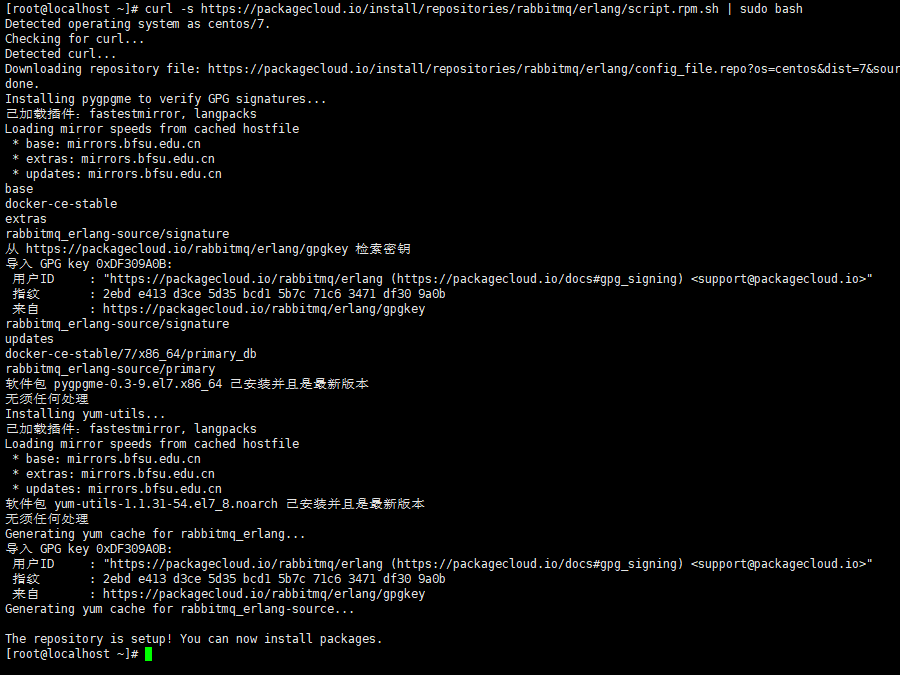
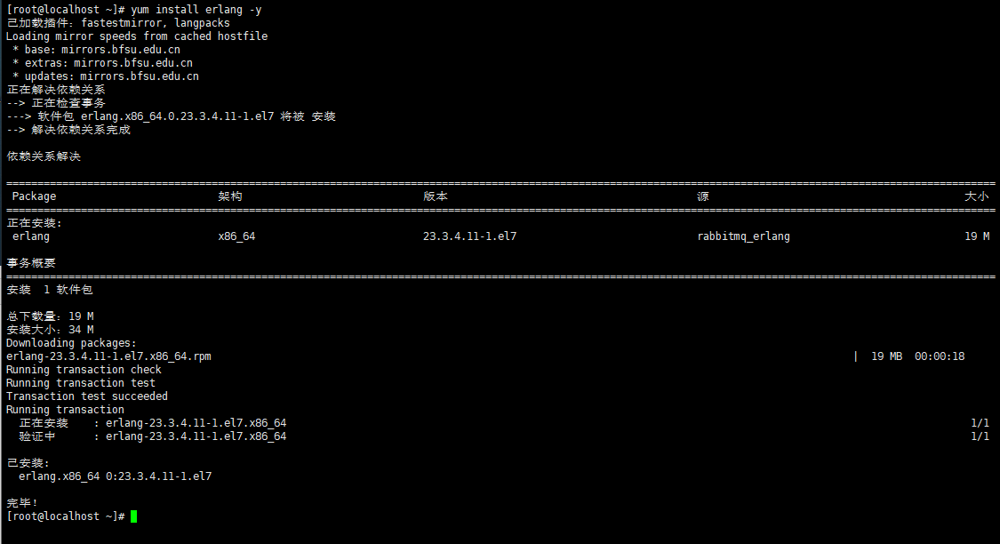
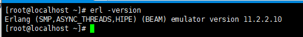
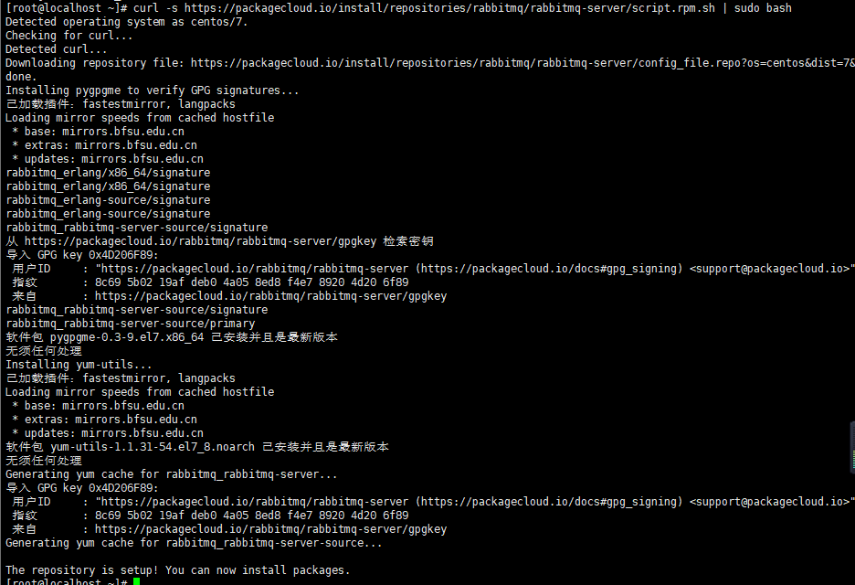
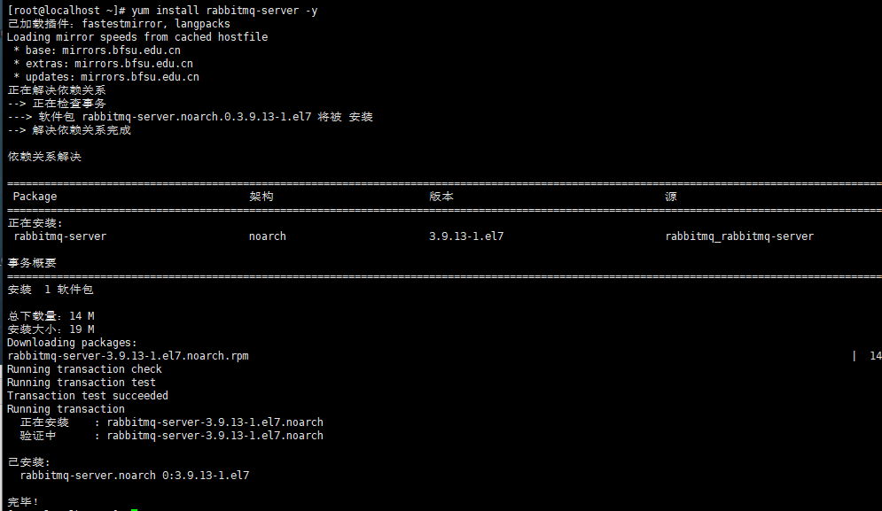
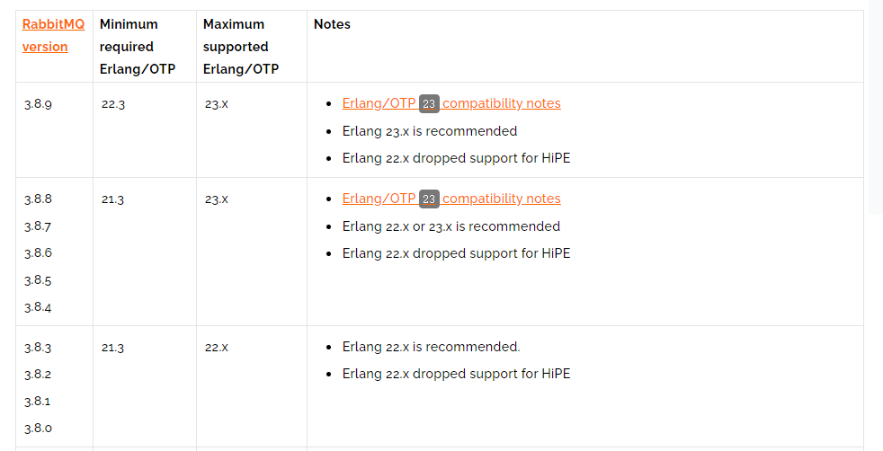
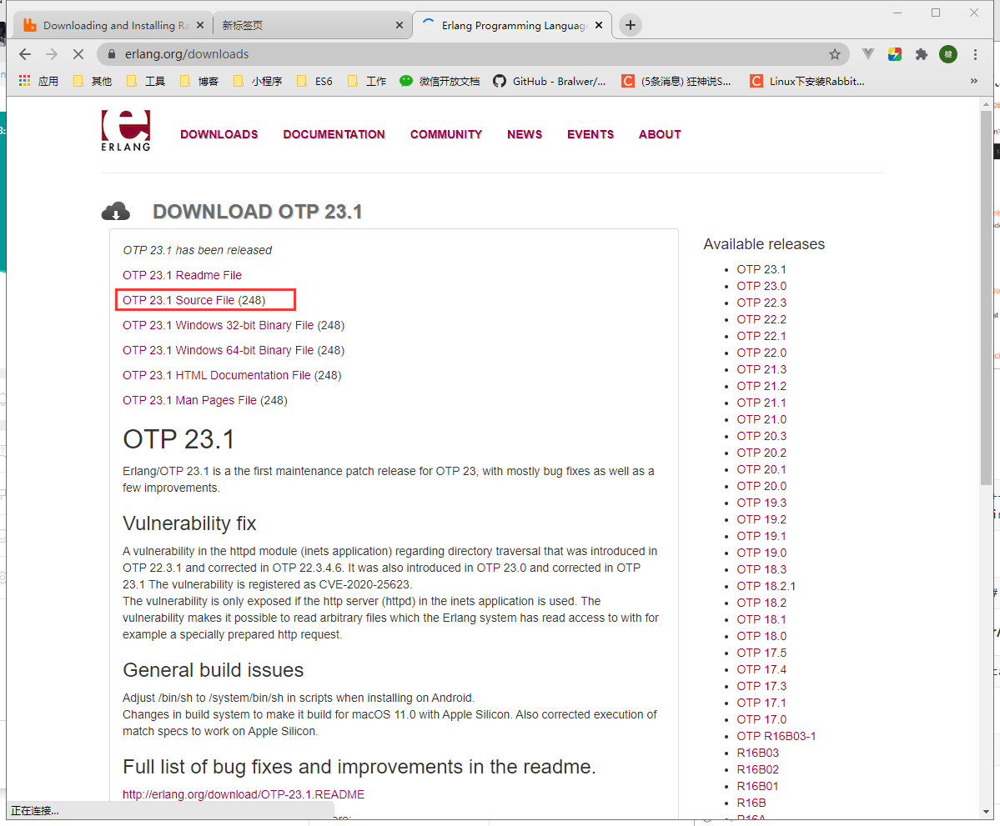
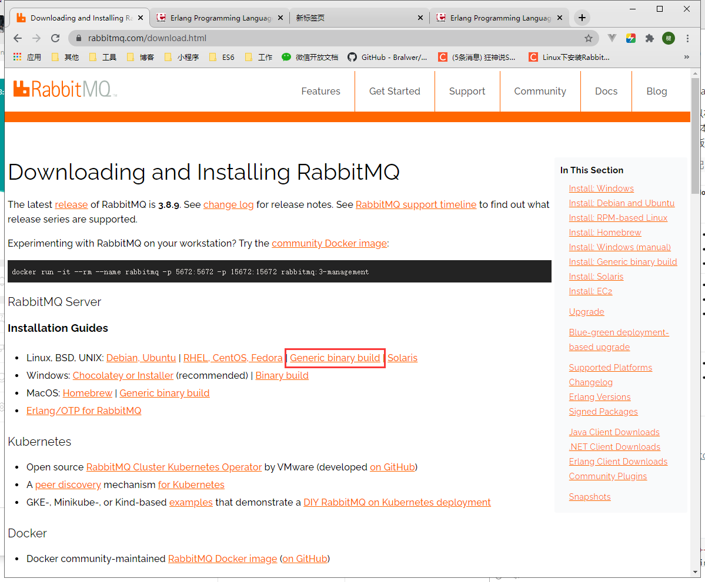
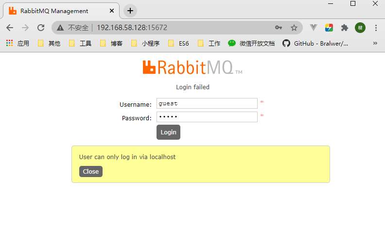

Linux安装rabbitmq
方法一
1、centos7在线安装rabbitmq
因为RabbitMQ是由Erlang语言开发的所以需要安装Erlang的开发环境，再安装RabbitMQ
1、安装Erlang
1 | [root@localhost ~]# curl -s https://packagecloud.io/install/repositories/rabbitmq/erlang/script.rpm.sh | sudo bash |

1 | [root@localhost ~]# yum install erlang -y |

1 | [root@localhost ~]# erl -version |

2、安装rabbitmq
1 | [root@localhost ~]# curl -s https://packagecloud.io/install/repositories/rabbitmq/rabbitmq-server/script.rpm.sh | sudo bash |

1 | [root@localhost ~]# yum install rabbitmq-server -y |

3、配置rabbitmq
1 | # 开机启动 |
方法二
1、centos7本地安装rabbitmq
1、下载安装包
下载 RabbitMQ 所需的安装包，即 Erlang 和 Rabbit MQ。
1 RabbitMQ是Erlang语言编写的，所以在安装RabbitMQ之前，需要先安装Erlang。但是在搭建RabbitMQ环境过程中，会因为RabbitMQ 和 Erlang的版本问题导致环境一直搭建不起来， 以下是RabbitMQ与Erlang的版本对应关系，所以这里我下载的RabbitMQ的版本为 3.8.9，Erlang的版本为23.1
查看RabbitMQ 和 erlang 版本是否匹配 链接



3 上传文件 到 linux，解压文件
1 | [root@localhost app]# tar -zxvf otp_src_23.1.tar.gz |
4 在/usr/local/software 目录下创建一个rabbitmq_software文件夹，便于我们管理安装的RabbitMQ软件，并把我们解压好的文件移动到rabbitmq_software目录下
1 | [root@localhost local]# mkdir rabbitmq_software |
2、安装 Erlang
1 依赖环境安装
1 | yum -y install make gcc gcc-c++ build-essential openssl openssl-devel unixODBC unixODBC-devel kernel-devel m4 ncurses-devel |
2 编译Erlang
这里由于不需要用java编译器编译,所以后面添加了 –without-javac
1 | ./configure --prefix=/usr/local/erlang --without-javac |
3 安装 Erlang
1 | make && make install |
4 配置环境变量
1 | [root@localhost otp_src_23.1]# vim /etc/profile //编辑环境配置文件 |
5 创建软连接
1 | [root@localhost otp_src_23.1]# ln -s /usr/local/erlang/bin/erl /usr/local/bin/erl |
6 验证是否安装成功
1 | [root@localhost otp_src_23.1]# erl |
3、安装RabbitMQ
1、配置RabbitMQ环境变量
1 | [root@localhost ~]# vim /etc/profile //编辑环境配置文件 |
2、 开启Web管理界面插件，便于访问RabbitMQ
1 | [root@localhost sbin]# ./rabbitmq-plugins enable rabbitmq_management |
3、设置RabbitMQ开机启动
1 | [root@localhost sbin]# vim /etc/rc.d/rc.local |
4、后台启动 RabbitMQ 服务
1 | [root@localhost sbin]# ./rabbitmq-server -detached |
5 在浏览器的地址栏中输入你 服务器的ip地址:15672
1 | http://localhost:15672/#/ |
6、开发防火墙端口
1 | [root@localhost sbin]# firewall-cmd --zone=public --add-port=15672/tcp --permanent |
7、 RabbitMQ的Username 和 Password 默认为guest/guest
远程登录

可以看到Login failed (登录失败)，User can only log in via localhost (用户只能通过本地主机登录)，因为rabbitmq从3.3.0开始禁止使用guest/guest管理员权限通过除localhost外的访问
添加一个用户，解决登陆问题
1 | [root@localhost sbin]# rabbitmqctl add_user admin 123456 |
 微信
微信 支付宝
支付宝